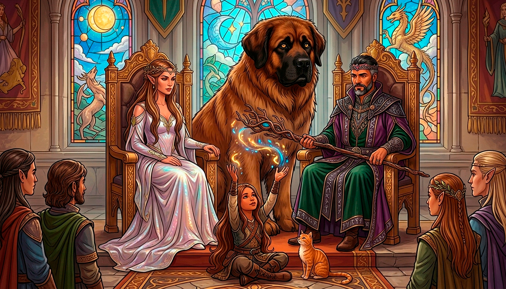
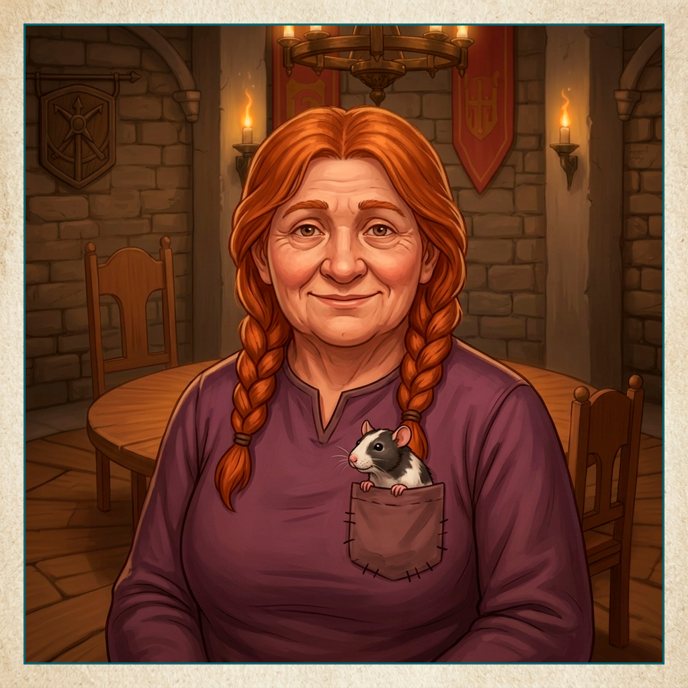
Alura BastielRepresentante dos humanos no Reino dos Sábios, Alura é conhecida por sua mente rápida e língua afiada, capaz de transformar qualquer debate em um jogo de estratégia onde raramente sai em desvantagem. Vivaz, perspicaz e sempre atenta, ela lê situações e pessoas com precisão quase cirúrgica, explorando brechas e oportunidades com a elegância de quem domina tanto a política quanto a retórica.
Sua presença é marcante e, por vezes, intimidadora, pois Alura não hesita em confrontar ideias ou desafiar figuras de autoridade quando acredita estar certa, tornando-se uma das vozes mais influentes e imprevisíveis entre os representantes do Reino dos Sábios.
Não vai a lugar nenhum sem seu rato de estimação, Pierre.
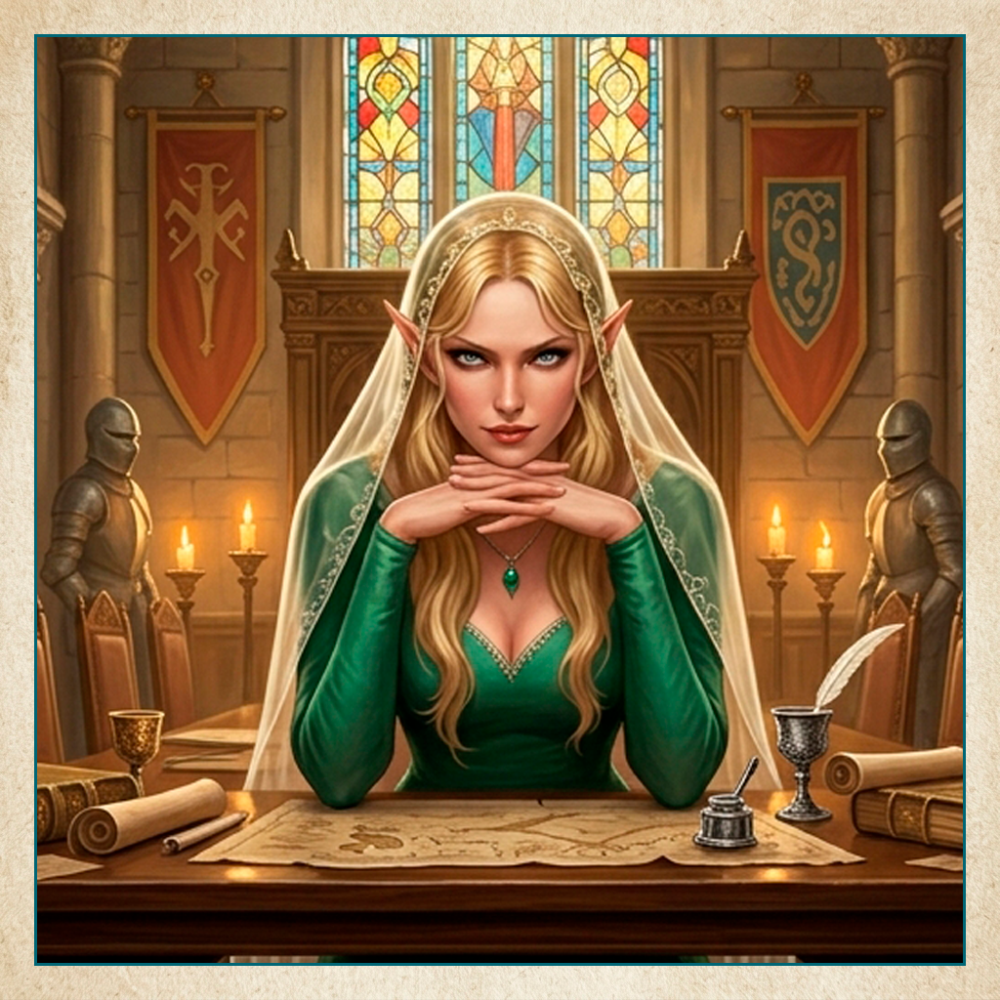
Carólin ImogenRepresentante dos elfos no Reino dos Sábios, Carólin é uma figura que parece transcender os próprios padrões de beleza e elegância de seu povo, sendo amplamente considerada a mais bela entre eles não apenas por sua aparência, mas pela harmonia de sua presença, voz e postura.
Sua atuação política é marcada por uma serenidade firme e uma inteligência sutil, capaz de influenciar decisões com poucas palavras, sempre escolhidas com precisão quase poética. Carólin carrega consigo o peso de representar uma das culturas mais antigas de Phantasia, e o faz com graça e autoridade, sendo ao mesmo tempo admirada, respeitada e, por vezes, subestimada por aqueles que confundem sua delicadeza com fragilidade.
E a verdade não poderia ser mais diferente disso: no fundo, e nas sombras, Carólin é uma das jogadoras mais frias e cruéis no jogo político de Phantasia.
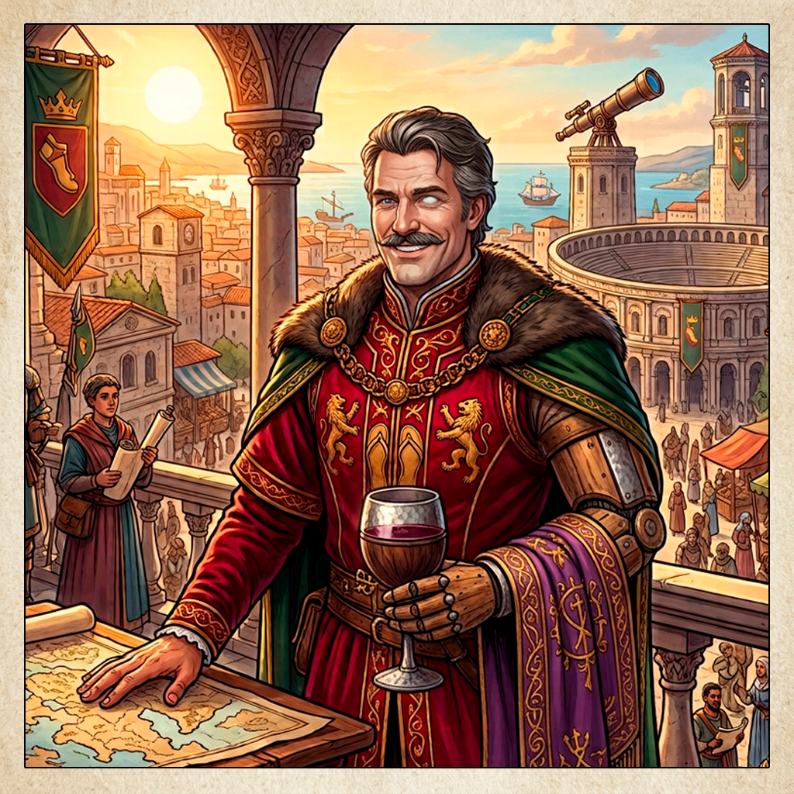
Conde Marcius MaximusO governante da Cidade das Sandálias, Conde Marcius Maximus, é um humano cuja autoridade combina tradição, carisma e um toque de sofisticação cosmopolita. Um erudito conhecido por sua visão aguçada para os negócios e por sua habilidade em mediar conflitos entre comerciantes, artistas e guildas da cidade, ele transformou a metrópole em um verdadeiro centro cultural e acadêmico do Reinado.
Apesar de sua postura elegante e formal, Marcius possui um senso estratégico aguçado (herança de sua atuação como consultor estrategista para assuntos de segurança), sempre atento aos detalhes que podem garantir prosperidade ou prevenir crises. Sua liderança é marcada por equilíbrio: respeitado pelos cidadãos e temido pelos adversários, ele consegue manter a Cidade das Sandálias tanto como palco de grandes espetáculos quanto como um bastião de poder e influência.
Ele perdeu olho e braço esquerdos na Guerra do Lich, desde então usando uma prótese mecânica construída pelo Dr. Bolovo.
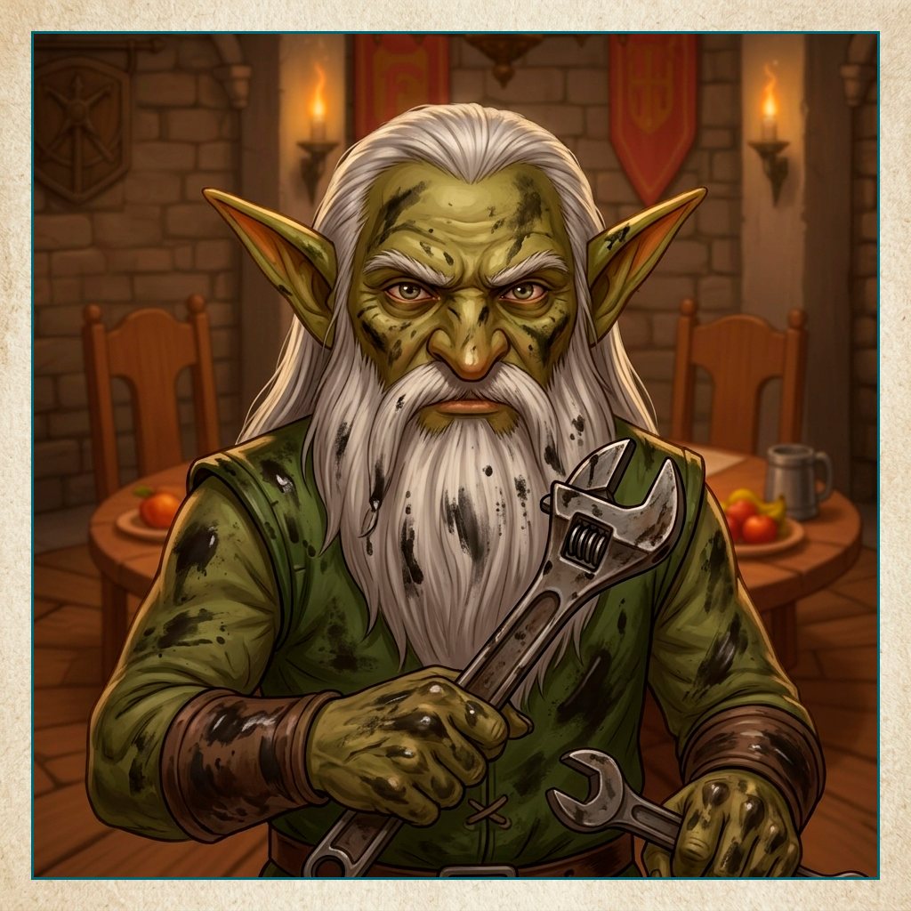
Dr. Julian BolovoRepresentante dos goblins no Reino dos Sábios, Julian é uma figura inesperadamente respeitável e sofisticada, que desafia os estereótipos associados ao seu povo. Conhecido por sua inteligência aguçada e domínio de diversas áreas do conhecimento - principalmente mecânica -, ele combina perspicácia científica com astúcia política, transformando debates complexos em oportunidades para avanços tecnológicos. Ele é meticuloso, detalhista e raramente subestima seus interlocutores, conseguindo fazer com que até os mais preconceituosos reconheçam a voz e o peso dos goblins nas decisões do Reinado.
Apesar de sua postura racional e controlada, há uma energia inquieta nele, típica de sua espécie, que o torna imprevisível e fascinante, sempre pronto a apresentar soluções criativas para problemas que outros considerariam insolúveis.
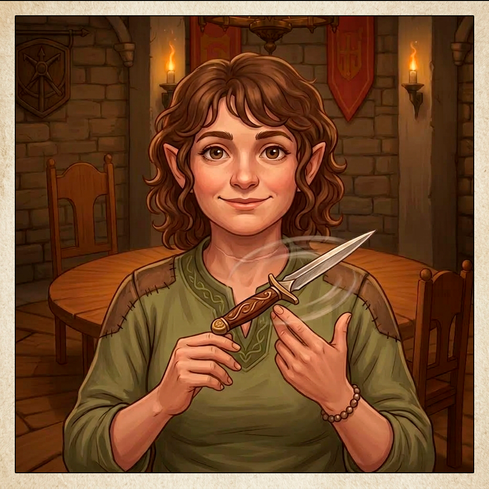
Elisa ConfeteRepresentante dos hobbits no Reino dos Sábios, Elisa é frequentemente subestimada à primeira vista, mas provou ser uma das mentes mais sagazes e observadoras entre os líderes do Reinado. Com uma postura leve, sorriso constante e uma habilidade natural para criar conexões, ela prefere influenciar pelos detalhes, palavras bem colocadas e uma leitura apurada do ambiente. Elisa valoriza equilíbrio, bem-estar e soluções práticas, trazendo uma perspectiva única às discussões mais complexas.
Por trás de sua aparência acolhedora, existe uma estrategista discreta, que entende que, muitas vezes, são os movimentos mais sutis que realmente moldam o rumo das decisões.
Quando perguntam sobre sua cicatriz no pescoço, ela apenas sorri e diz que é uma lembrança de alguém querido.
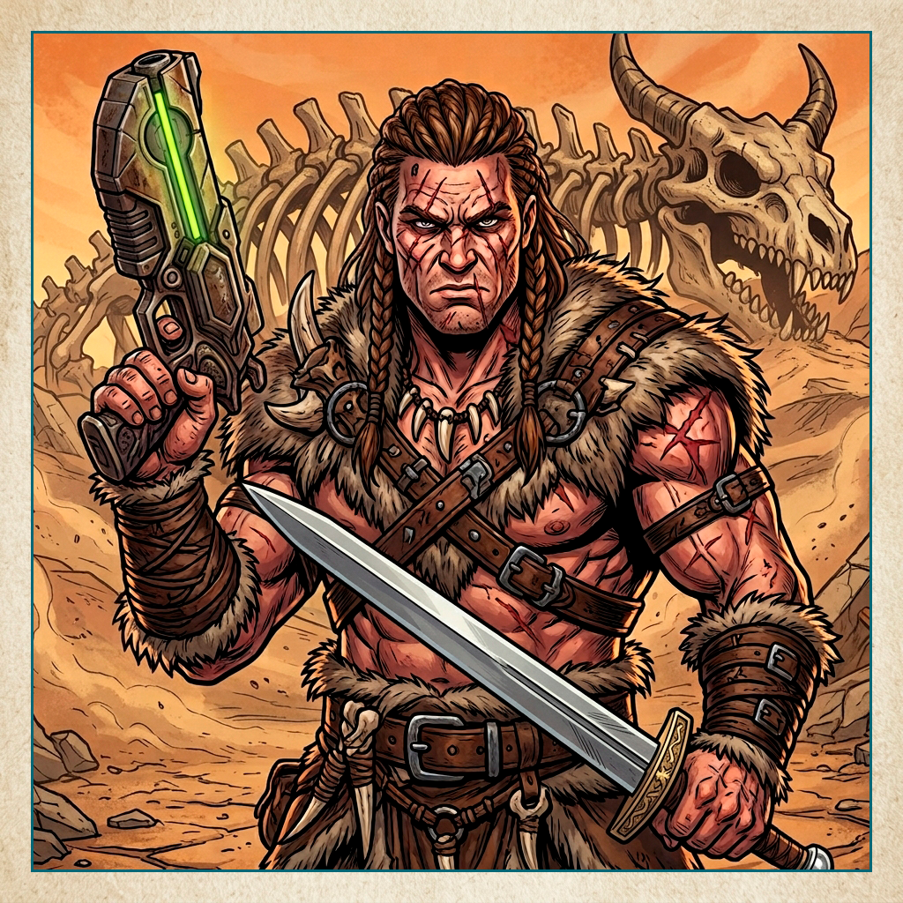
Garrik GhanEsse formidável e violento guerreiro é o líder dos Bodes Brancos, o grupo de saqueadores mais brutal e temido de Phantasia, que chama de lar uma vila nas Terras Ruins.
Esqueça os estereótipos: Garrik é inteligente, culto até, e um estudioso de literatura e tecnologias não arcanas. Recebeu a alcuna de "O Colecionador" por juntar em sua grande casa uma grande coleção de máquinas e tecnologias. Seu maior tesouro é uma pistola alienígena (que ele, nem ninguém, sabem que não é desse planeta).
Há alguns anos, Garrik tropeçou na Ruína Estelas, sem saber o que era. Ali ele encontrou uma pistola alienígena que traz consigo desde então, que usa para subjulgar outros grupos de bandidos, se estabelecendo como o mais forte deles. Ele nunca mais encontrou a Ruína, e ele procurou muito, em busca de novas tecnologias bélicas como essa.
Reencontrar esse lugar tem sido sua maior obsessão. Principalmente porque ele sabe que sua pistola está quase sem projéteis.
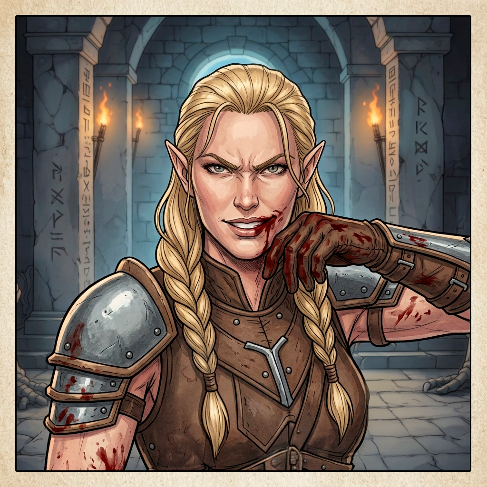
Gëra MacVikingLíder dos Vândalos, Gera é uma elfa que rompe com tudo o que se espera de seu povo, trocando a tradição refinada por uma vida de conflito, liberdade e intensidade. Alta, imponente e marcada por uma presença quase intimidadora, ela é tão explosiva quanto imprevisível em combate, liderando com ferocidade e exemplo direto.
Ainda assim, fora do campo de batalha, revela uma faceta inesperada: é mãe amorosa, leal até o fim aos seus aliados, mantém um código de conduta próprio e surpreende muitos com sua educação firme e hospitalidade sincera, desde que respeitada.
Gëra foi famosa em tempos antigos como aventureira, atuando com o grupo Quatrocinco durante a Guerra do Lich, junto com seu ex-marido Marvelus (eles ainda se amam 🫶) e seu filho Ulfric. Uma cavaleira feroz e disciplinada, era a estrategista de batalha do grupo e seus planos de ataque ou defesa quase nunca falharam.
Se os diversos grupos de Vândalos hoje são uma unidade até que coesa e com "leis" homogêneas, é pelo trabalho dela.
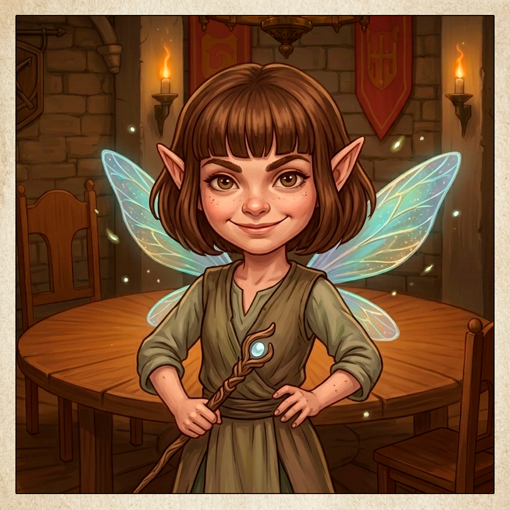
Isis VagalumeRepresentante das fadas no Reino dos Sábios, Isis é uma presença enigmática, mas sábia. Ágil de pensamento e delicada em palavras, ela é capaz de transmitir ideias complexas com a leveza de um sussurro, conquistando respeito sem precisar levantar a voz. Isis atua como ponte entre a existência idílica das fadas e as realidades políticas de Phantasia, trazendo uma visão voltada para harmonia, equilíbrio e preservação, mas sempre atenta às sutilezas que podem alterar o destino do reino.
Seu olhar perspicaz e comportamento quase imaterial escondem uma mente estratégica, capaz de antecipar movimentos de aliados e adversários com uma precisão que poucos conseguem compreender. Tal qual a própria magia crua, fadas podem ser imprevisíveis.
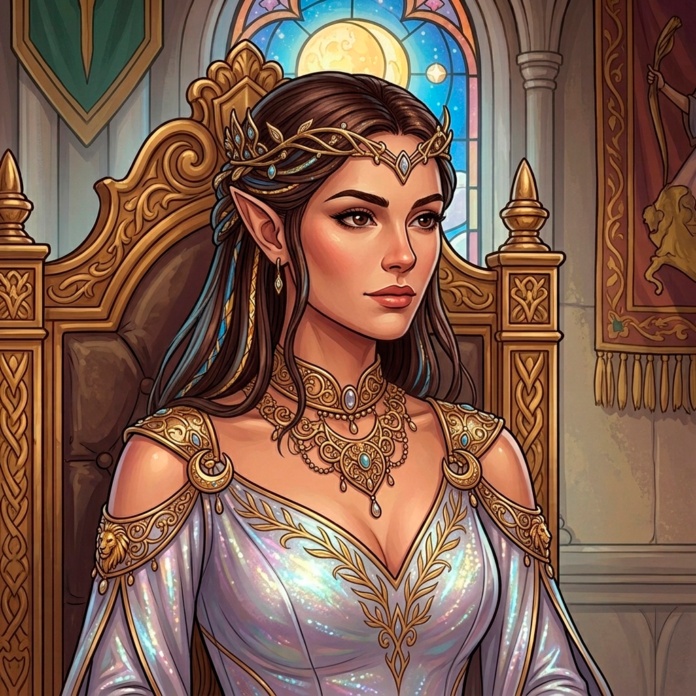
Jak’Ln FäyeRainha de Phantasia, Jak’Ln é uma elfa cuja presença é tão cativante quanto estratégica. Dotada de uma beleza marcante e de um carisma quase sobrenatural, ela domina a arte da diplomacia com naturalidade impressionante. Em salões políticos, encontros formais ou conversas casuais, sua habilidade de conduzir diálogos e influenciar decisões faz com que poucos sequer percebam quando já foram convencidos. Ela é o coração social do Reinado.
Por trás de sua aparência graciosa, no entanto, existe uma mente extremamente calculista e atenta. Jak’Ln compreende pessoas com profundidade, identificando motivações, medos e desejos de forma inquietante. Sua influência se estende por cortes e conselhos, tornando-a uma peça essencial na manutenção do equilíbrio político do reino.
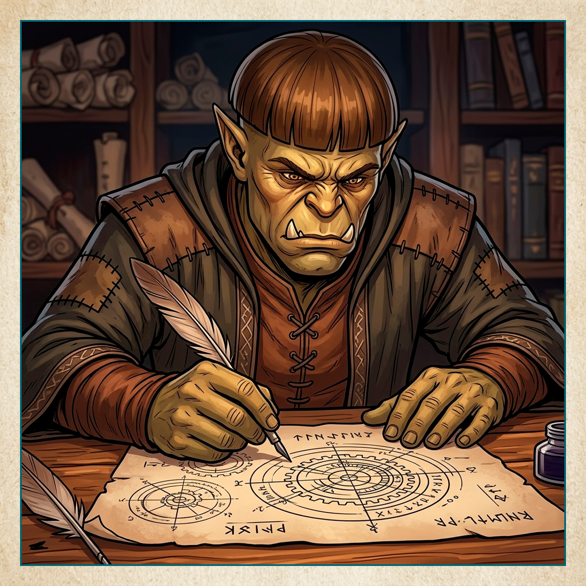
Joan’o Rafaelus PanzutusPrefeito do Povoado Heroico, Joan’o Rafaelus é um meio-orc que contrasta com o irmão em quase tudo, exceto no carisma. Enquanto Louis domina arenas, Joan’o conquistou corações com sua arte. Bardo de certa fama pelo reino, ele se tornou conhecido por uma habilidade rara e mágica: seus desenhos ganham vida. Criaturas esboçadas em pergaminhos podem se mover, interagir e até auxiliar em pequenas tarefas, como se fossem extensões da própria imaginação do artista. Essa dádiva fez de Joan’o uma figura querida e, ao mesmo tempo, intrigante.
Como prefeito, ele governa de maneira pouco convencional, usando sua arte e sensibilidade para resolver conflitos e inspirar a população. O Povoado Heroico, sob sua liderança, tornou-se um lugar vibrante, onde histórias são celebradas e onde aventureiros encontram não apenas descanso, mas também propósito. Ainda assim, há quem questione os limites de seu poder: e o que acontece quando uma obra ganha vida, mas decide não obedecer a seu criador?
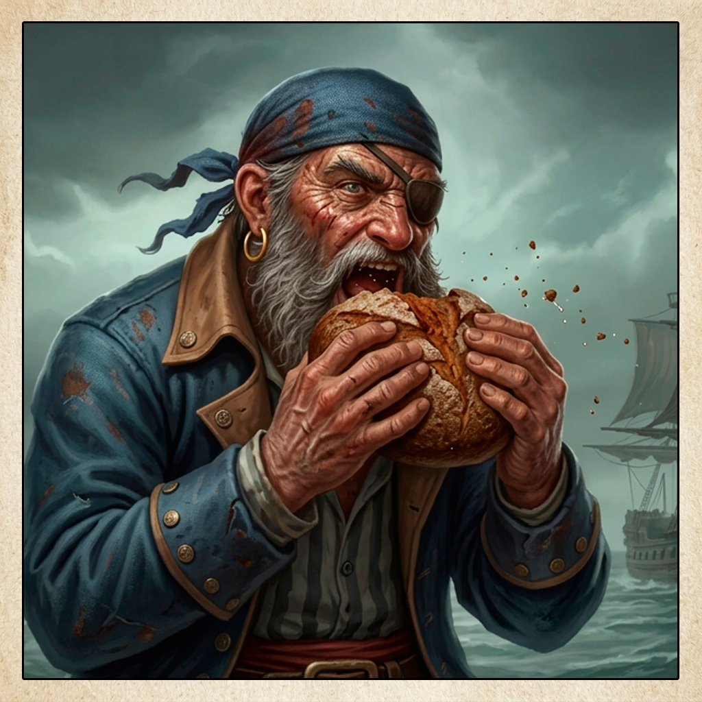
Jonatas "Maluco" CorvoUm dos piratas mais famosos de Phantasia, Jonatas é o temido e respeitado capitão do Rubi Verde, um navio cuja reputação atravessa mares e histórias. Ofender seu navio é pior do que ofender sua mãe.
Astuto, carismático e com um senso de justiça peculiar, ele escolhe seus alvos com cuidado, atacando apenas aqueles que considera “maus senhores e exploradores”, o que lhe rendeu uma fama quase lendária entre os oprimidos e minorias e uma lista crescente de inimigos entre a elite.
Seu comando é firme, mas leal e justo, e sua tripulação o segue não apenas por temor, mas por respeito genuíno. Entre combates navais ousados e fugas improváveis, Jonatas construiu uma imagem que oscila entre fora da lei e herói, dependendo de quem conta a história.
Jonatas foi famoso em tempos antigos como aventureiro, atuando com o grupo Quatrocinco durante a Guerra do Lich, onde firmou uma amizade forte com Thar, o único ser que consegue tirá-lo do mar de tempos em tempos. Sua ousadia e coragem (e ok, sua loucura também) levaram o grupo à vitória inúmeras vezes.
Ele já foi o melhor atirador de Phantasia... verdade seja dita, ele ainda é, só não se importa mais em provar isso. Durante a Guerra, uma bruxa que foi prova disso o amaldiçoou a ter um dos olhos queimando aleatoriamente com fogo mágico. E é por isso que usa um tapa-olhos, sempre alternando o lado.
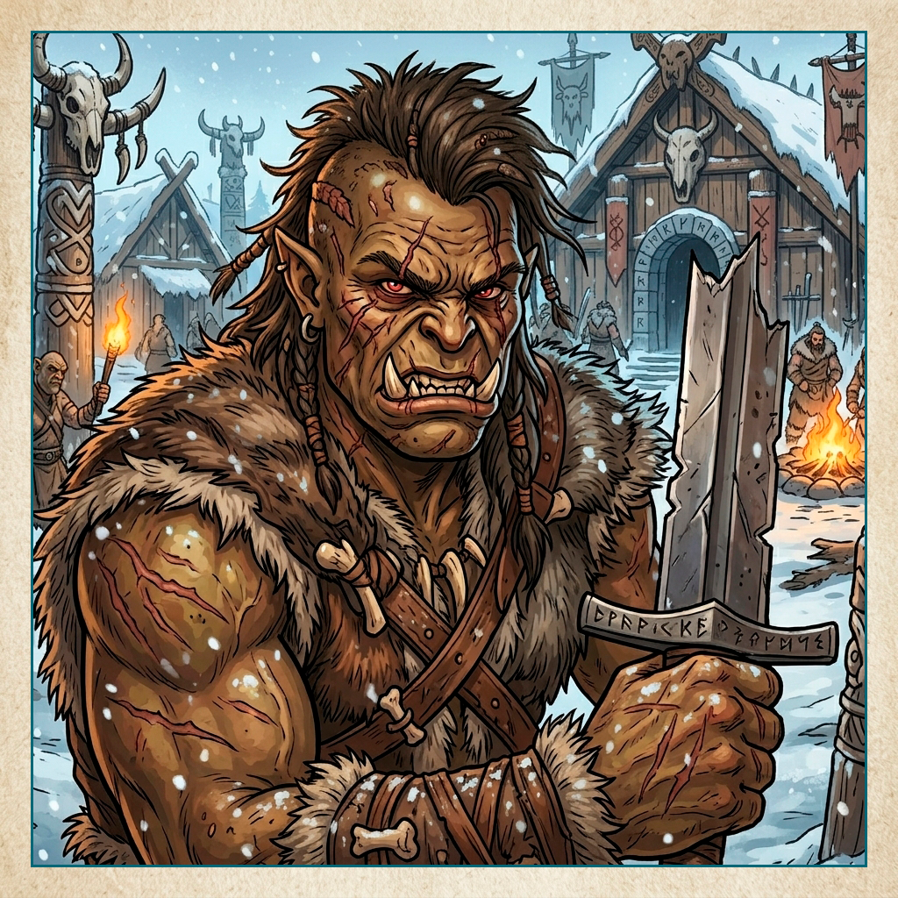
Komota, o LeãoKomota, um meio-orc de presença colossal, é o autoproclamado bárbaro mais forte de Phantasia e líder absoluto de sua tribo nas duras terras da Desolação de Gelo. Sua força física é tão impressionante quanto sua confiança; muitos dizem que exagerada, mas poucos ousam contestar abertamente.
Forjado por um ambiente implacável, ele lidera com autoridade direta, valorizando coragem, resistência e lealdade acima de tudo.
Apesar de sua natureza bruta e impulsiva, há nele um instinto de liderança genuíno, capaz de unir guerreiros sob uma causa comum e enfrentar ameaças que fariam outros recuar. Para seus seguidores, ele é mais do que um chefe: é um símbolo de sobrevivência e poder em um mundo que raramente perdoa fraqueza.
Fato engraçado: não existem leões em Phantasia! Komota diz que, uma noite, sonhou que estava em um mundo estranho cheio de criaturas majestosas e pessoas estranhas, que tentaram prendê-lo e espetaram seu corpo com agulhas que tiravam sangue em tubos. Ele disse também que um dos homens que cuidava da sua cela estava vendo, através de uma caixa mágica, animais chamados leões caçando, e o narrador dizia que eles eram os reis da selva.
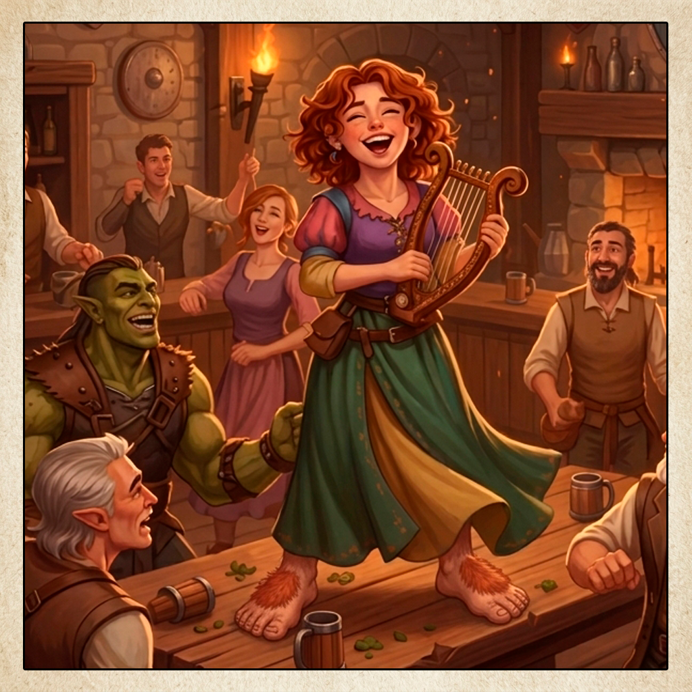
Laminia VentorubroLaminia é uma das bardas mais célebres de todo o Reinado, conhecida por sua voz marcante e pela intensidade mágica com que transforma histórias em experiências vivas para quem a escuta. Suas canções não são apenas entretenimento, mas registros emocionais de batalhas, perdas e triunfos que moldaram Phantasia.
Durante a Guerra do Lich, ela acompanhou o lendário grupo formado por Thar, Ulfric, Jonatas, Gëra e Marvelus, atuando não só como cronista, mas como peça ativa nos conflitos, usando sua arte para inspirar aliados, desestabilizar inimigos e influenciar o próprio curso das batalhas.
Após a guerra, ela se tornou uma figura quase mítica, viajando pelo reino e espalhando as histórias daquele tempo sombrio, embora nem tudo o que conte seja necessariamente literal. Há quem diga que suas músicas escondem segredos, códigos e até fragmentos de magia antiga, compreendidos apenas por poucos.
A pequena hobbit ama essa aura mística, mas a verdade é que ela apenas conta histórias, não segredos ancestrais. Mas artisticamente é tao divertido que ela não pretende acabar com o mistério.
Carismática e enigmática, ela mantém laços com antigos companheiros, mas segue um caminho próprio, sempre em movimento, como o vento que vem do sul que inspira seu nome, levando consigo não apenas canções, mas ecos de um passado que ainda insiste em não descansar.
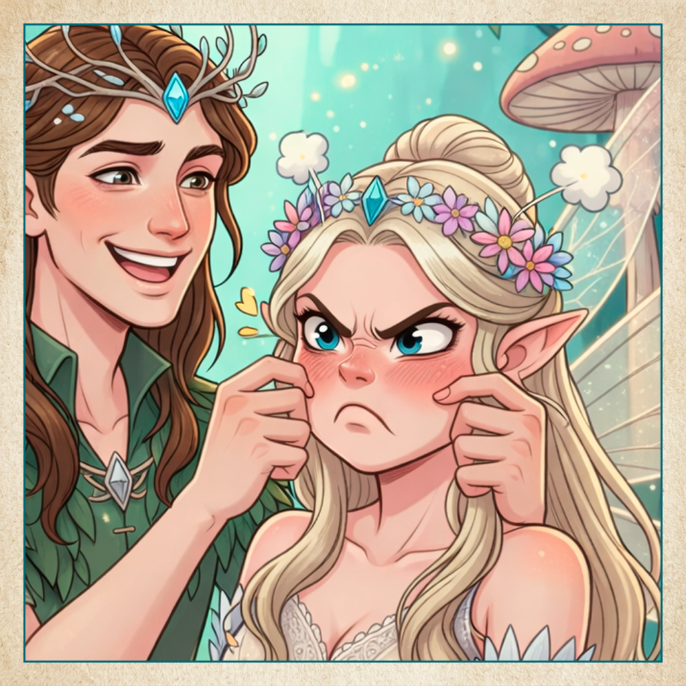
Liluan "Geleira" Sam-MuelRainha das Fadas e governante de facto de seu reino, Liluan é a verdadeira força política por trás da estabilidade e poder das terras feéricas, conduzindo decisões com uma mente fria, precisa e extremamente estratégica.
Calculista em seus julgamentos e sempre vários passos à frente, ela equilibra razão e justiça com uma elegância silenciosa, garantindo que cada escolha beneficie não apenas o presente, mas o futuro de seu povo.
Apesar de sua postura reservada e, por vezes, intimidadora, Liluan é conhecida por sua doçura contida e senso de equidade, tratando aliados e súditos com respeito e firmeza. Aqueles que a subestimam por sua delicadeza rapidamente percebem que sua verdadeira força está na clareza de pensamento e na capacidade de agir sem hesitação quando o equilíbrio de seu reino está em jogo.
A única coisa que ela ama mais do que política é seu marido, o rei Samual. Mas ela nunca vai deixar transparecer na frente dos outros que ela adora ser "perturbada" pelos carinhos dele.
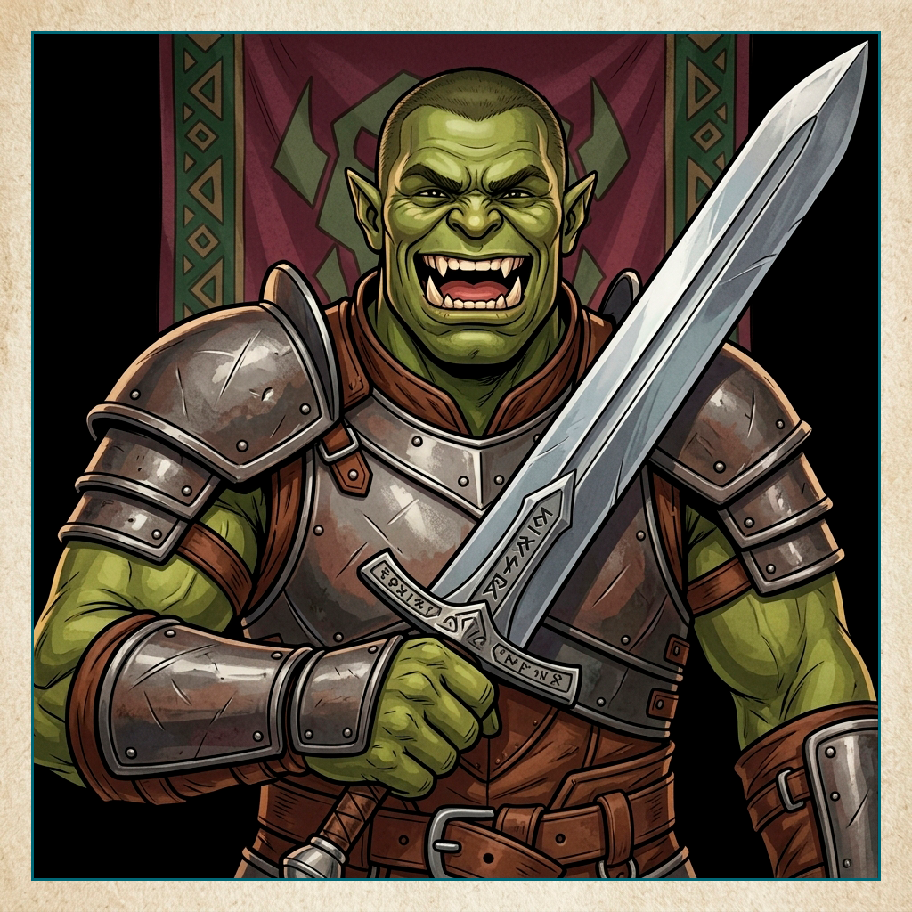
Louis Felipus PanzutusEx-campeão do coliseu da Cidade das Sandálias, Louis Felipus construiu sua reputação tanto com a força bruta quanto com uma presença de palco inigualável. Meio-orc de porte imponente, ele conquistou multidões com suas vitórias e pelo espetáculo que criava a cada combate, sempre teatral, provocador e surpreendente. Após se aposentar invicto, assumiu a organização dos jogos, transformando-os em eventos ainda mais grandiosos, onde estratégia, entretenimento e política se misturam sob sua supervisão.
Extremamente carismático e dono de uma lábia afiada, ele transita com facilidade entre diferentes culturas e classes sociais, dominando inúmeros idiomas e adaptando-se a qualquer ambiente. Muitos o veem como um mestre da negociação disfarçado de showman. Seja lidando com lutadores, nobres ou figuras duvidosas, Louis mantém sua posição no centro de tudo, onde o espetáculo acontece e as verdadeiras apostas são feitas.
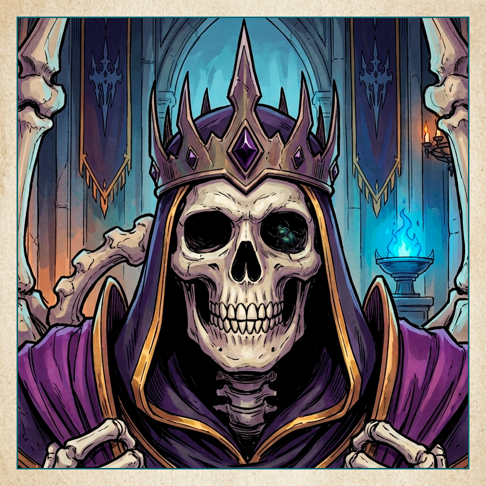
Maniel LuzvelozConhecido como o Rei Lich, Maniel Luzveloz é um elfo cuja história transformou-se em lenda e pesadelo para toda Phantasia. Antigo conselheiro real e mago prodigioso, ele abandonou a vida mortal há décadas, fundindo sua essência à necromancia para alcançar poder absoluto e imortalidade.
Sua presença é sentida mesmo na ausência; o Castelo Sinistro, agora seu domínio, emana uma aura de terror e magia corrompida, protegida por soldados zumbis, criaturas sombrias e barreiras que desafiam qualquer invasor.
Apesar de seu silêncio e distância, cada movimento, cada plano e cada criatura que envia refletem uma mente brilhante e cruel, capaz de manipular aliados e inimigos com a mesma precisão de um maestro regendo sua sinfonia macabra.
Maniel não é apenas uma força de destruição, mas um estrategista paciente, observando o mundo por décadas enquanto acumula conhecimento e poder. Alguns acreditam que ele busca algo além da dominação: segredos esquecidos, artefatos impossíveis e magias antigas capazes de alterar a própria realidade. A história conta que ele foi responsável por transformar regiões inteiras, como a Floresta Negra e as Minas Amaldiçoadas, deixando marcas indeléveis de sua influência.
Para muitos, enfrentar Maniel Luzveloz não é apenas confrontar um inimigo; é encarar um século de ambição, astúcia e magia imortal, um desafio para o qual poucos estariam verdadeiramente preparados.
Um detalhe desconhecido sobre ele: Maniel testou a magia lich em um besouro antes de si mesmo, que é hoje seu pet. Jones, o besouro. Ele gosta de descansar nas cavidades oculares de Maniel. Pois é...
Dica para o mestre: se você quiser usar o Rei Lich na sua aventura, seja criativo sobre o motivo pelo qual ele buscou imortalidade e se corrompeu. Pura maldade pode ser divertido mas perde a graça rápido...
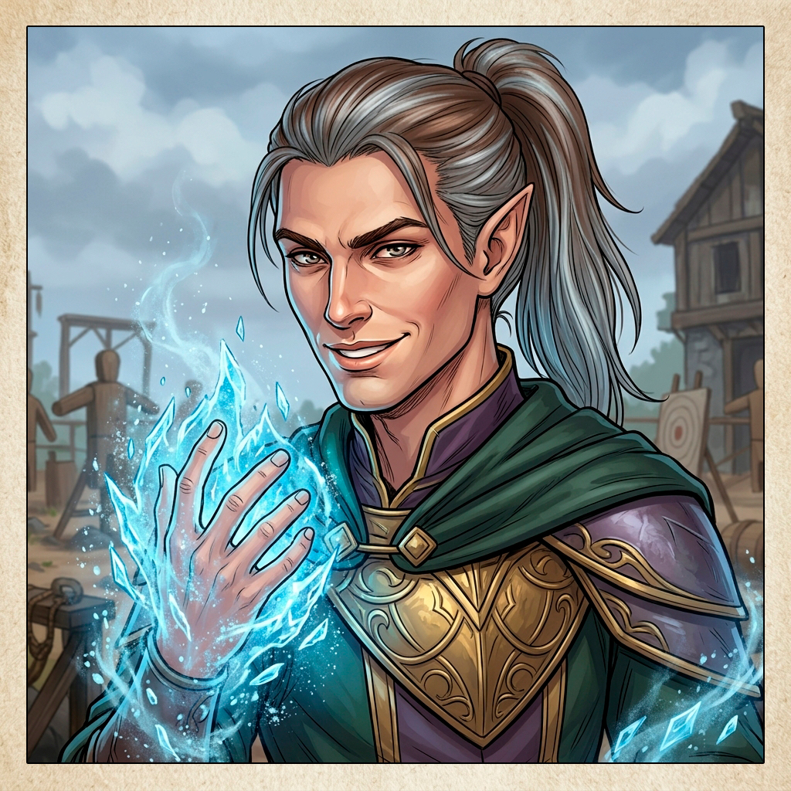
Marvelus MercuriumMarvelus é um meio-elfo de ambição refinada, cuja vida solitária em uma torre isolada esconde uma mente inquieta e sempre em busca de mais conhecimento e poder para derrotar Maniel. Mago talentoso e membro dos enigmáticos Língua de Prata — uma ordem antiga de bardos conhecidos por sua influência e eloquência — ele combina magia e palavras com igual maestria, sendo capaz de encantar tanto em batalha quanto em conversas.
Galanteador por natureza, ele mantém uma relação complexa com seu passado, especialmente com Gëra, sua antiga companheira, por quem ainda nutre sentimentos, e com seu filho Ulfric, a quem observa com orgulho e preocupação.
Entre estudos arcanos, intrigas sutis e laços não resolvidos, ele caminha por uma linha tênue entre o poder que deseja alcançar e as conexões que ainda o mantêm humano.
Marvelus foi famoso em tempos antigos como aventureiro, atuando com o grupo Quatrocinco durante a Guerra do Lich, junto com sua ex-esposa (eles ainda se amam 🫶 e a culpa é dele, que se isolou em sua torre) e seu filho. Um mago inteligentíssimo, apesar de indiciplinado, ajudava sua esposa nas estratégidas do grupo.
Talvez em Phantasia seu poder mágico bruto hoje esteja abaixo apenas do de Maniel.
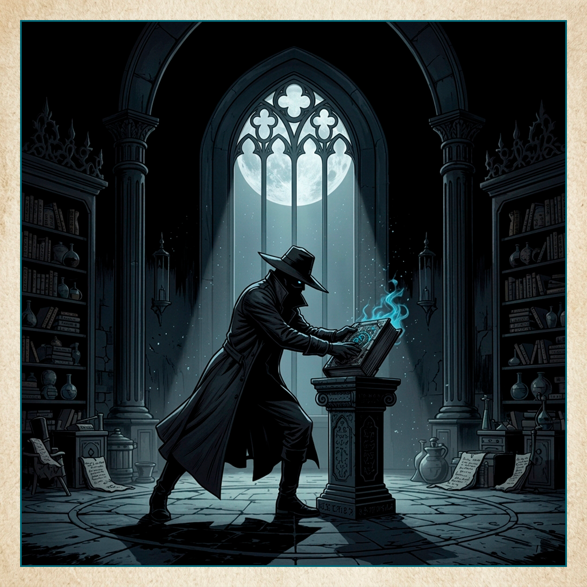
Mister MistérioConhecido em todo Phantasia como o ladrão mais astuto e audacioso do reino, ele ganhou fama não apenas por seus furtos impossíveis, mas pelo toque teatral com que deixa sua assinatura: uma interrogação mágica, flutuando no ar ou gravada de forma sobrenatural, desafiando autoridades e provocando rumores por onde passa.
Mestre em furtividade, disfarces e estratégias inesperadas, ele desaparece sem deixar rastros, confundindo vítimas, guardas e até aliados sobre como alguém poderia cometer crimes tão ousados. Sua identidade permanece um mistério absoluto, alimentando lendas e teorias sobre quem realmente se esconde por trás de cada golpe perfeito.
O que ninguém sabe é que ele é um doppelganger.
Poucos conseguem persegui-lo por muito tempo, pois sua astúcia vai além da habilidade física: ele parece sempre um passo à frente, antecipando planos e explorando fraquezas com inteligência calculada. Histórias contam que ele não rouba apenas por ganância, mas por diversão e desafio intelectual, transformando cada golpe em um enigma elaborado para testar o mundo que o caça.
Enquanto as autoridades e aventureiros tentam decifrar sua identidade, o ladrão continua a se mover nas sombras de Phantasia, deixando sempre a interrogação mágica como lembrete de que esteve ali e que ninguém jamais saberá como.
Dica para o mestre: o cartão de visitas de Mistério pode ser qualquer coisa: uma rosa amarela, um grafite de um rato, um literal cartão de visitas etc. Seja criativo!
Já sobre quem realmente é ele, fica a seu critério. Foi sugerido ser um doppelganger, mas na verdade ele é o que e quem você quiser. Dona Odete, a hobbit vendedora de laranjas na feira de domingo em Cavalaria? Pode. Joaquim, o adolescente rebelde meio-elfo que só quer irritar os pais? Claro. Polux, o druida que vive como um cachorro de rua em Sandálias e que todo mundo adora e dá comida e abrigo? Sim.
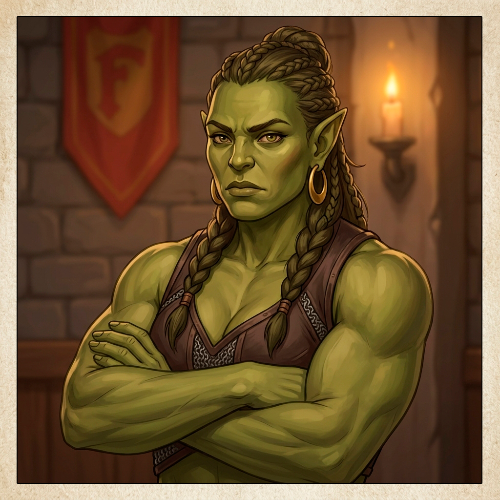
Safira, a RaivosaRepresentante dos orcs no Reino dos Sábios, Safira Tol’um Kah, conhecida pelo apelido “a Raivosa”, é uma presença intensa e inconfundível em qualquer reunião ou conselho. Sua força de vontade é tão lendária quanto sua fúria controlada, e ela não hesita em falar com franqueza, impondo respeito imediato mesmo aos mais experientes diplomatas.
Por trás da aparência agressiva, Safira é perspicaz, capaz de transformar sua paixão e intensidade em argumentos convincentes e decisões impactantes. Sua voz ressoa não apenas pelo poder de sua raça, mas também pelo conhecimento profundo das tradições orcs e pela lealdade inabalável ao bem-estar de seu povo, tornando-a uma aliada valiosa e uma adversária a ser temida.
Safira é, na verdade, uma meia-orc, mas se você disser isso para na frente dela você vai ser um meio-morto. Ela se considera e se vê como orc pura - apesar de ter os belos traços de seu pai elfo.
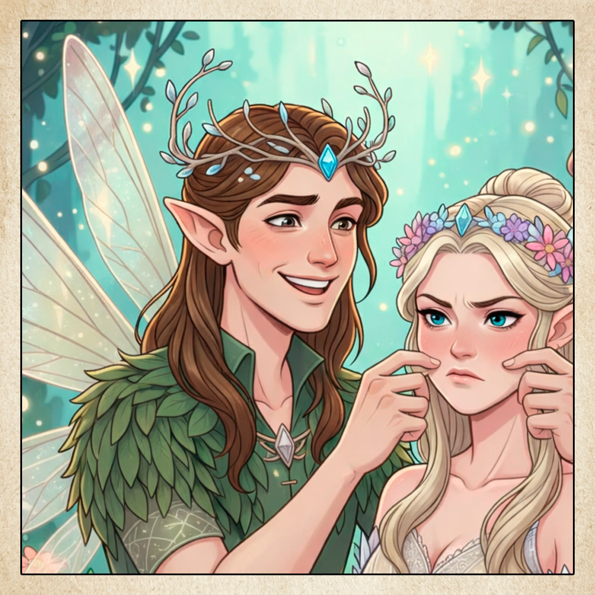
Samual Sam-MuelRei das Fadas, Samual é uma figura tão encantadora quanto despreocupada, vivendo uma existência leve, dedicada a prazeres simples, festas intermináveis e à contemplação das maravilhas de seu reino. Boêmio por natureza, ele prefere a música, a poesia e a companhia agradável às responsabilidades da coroa, o que faz com que muitos o vejam mais como símbolo do espírito das fadas do que como um governante ativo.
Na prática, quem conduz os assuntos políticos e mantém a ordem é sua esposa, Liluan, cuja influência é silenciosa, porém absoluta. Ainda assim, subestimar Samual pode ser um erro: por trás de sua aparência distraída, há momentos em que demonstra uma percepção profunda da realidade, como se enxergasse muito mais do que o próprio universo deixa transparecer.
A única coisa que ele ama mais do que uma boa festa é sua esposa, Liluan. Ele demonstra esse amor "perturbando" a mulher com carinhos.
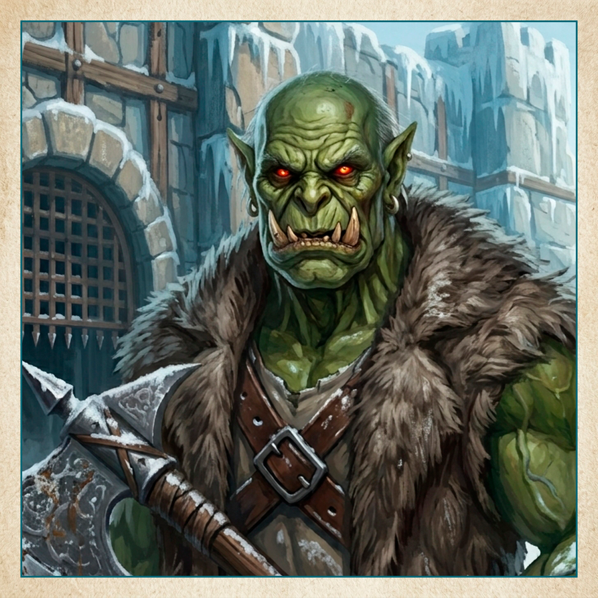
Thar, o ProfessorThar, é uma figura tão improvável quanto lendária: um orc bárbaro envelhecido que trocou a vida de batalhas por um isolamento quase absoluto nas Ruínas Ciclopeanas, onde guarda o enigmático Portão. Apesar da aparência bruta e do comportamento rústico, há nele uma sabedoria crua, adquirida ao longo de anos de contemplação, experiências e, dizem alguns, diálogo silencioso com forças antigas que habitam o local.
Seu título incomum não é ironia: Thar ensina, mas à sua maneira, testando aqueles que se aproximam com desafios físicos, enigmas e provocações filosóficas.
Thar foi famoso em tempos antigos como aventureiro, atuando com o grupo Quatrocinco durante a Guerra do Lich, onde fez uma amizade fraternal com Jonatas Corvo, que ainda o visita frequentemente. Um temido berseker, ele obliterava qualquer coisa que estivesse em seu caminho - de vez em quando até os aliados e amigos, se ninguém tomasse cuidado durante sua fúria cega.
Ninguém sabe ao certo sua idade, nem há quanto tempo ele está ali, mas entre os mais antigos há quem jure que Thar já era velho quando as próprias ruínas ainda não eram ruínas.
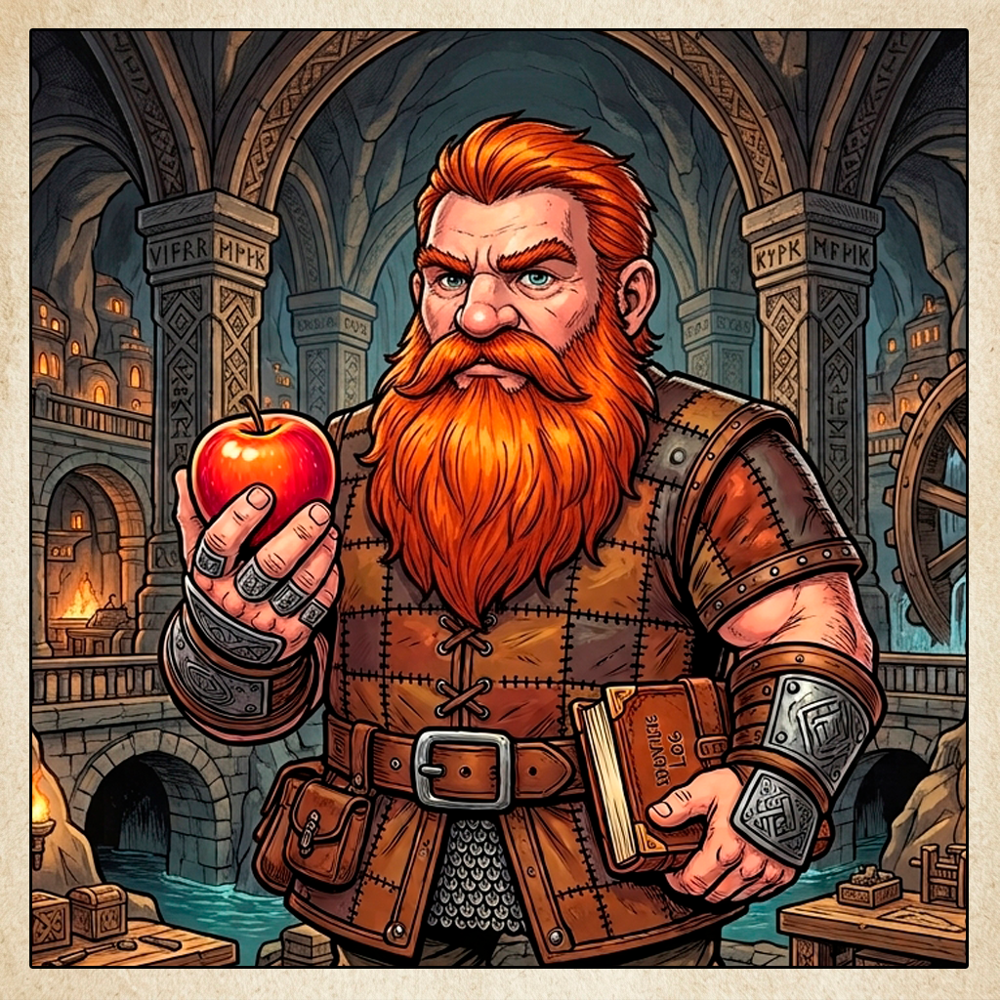
Túrin PedrazulRepresentante dos anões no Reino dos Sábios, o jovem Túrin Pedrazul é a personificação viva da resistência e da tradição de seu povo, conhecido por sua teimosia lendária e uma determinação inabalável que poucos conseguem contestar. De fala direta e sem rodeios, ele raramente cede em debates, defendendo os interesses anões com a mesma firmeza com que uma montanha enfrenta as tempestades.
Apesar de sua rigidez, Túrin é profundamente respeitado, pois por trás de sua postura inflexível há um senso de honra e lealdade sólidos e uma sabedoria prática forjada ao longo de anos de experiência, tornando-o uma voz difícil de ignorar e ainda mais difícil de dobrar.
Viciado em maçãs, dificilmente não estará com uma nas mãos.
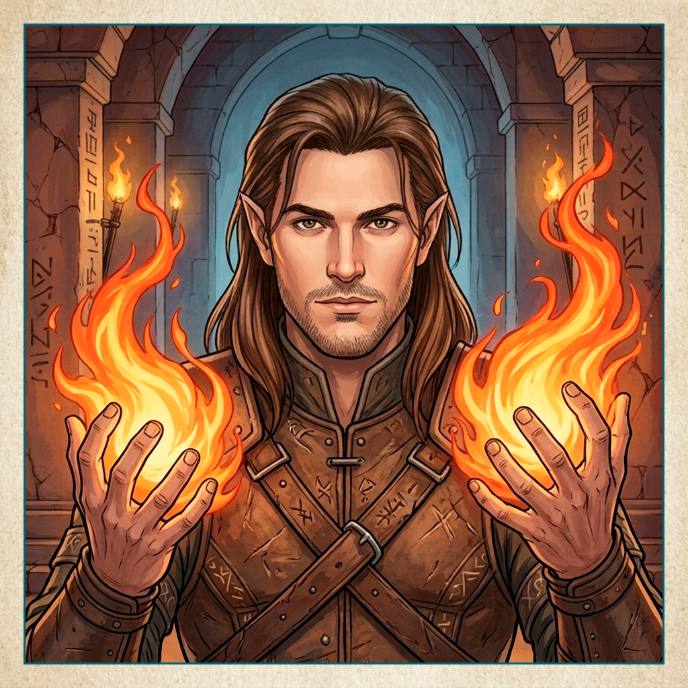
Ulfric McViking MercuriumFilho do mago Marvelus e da bárbara cavaleira Gëra, Ulfric é um meio-elfo que encarna uma combinação rara e perigosa de força bruta e poder arcano, capaz de canalizar fúria berserker enquanto conjura magia com intensidade instintiva. Desde muito jovem demonstrou um talento fora do comum e aos 10 anos já lutava na Guerra do Lich ao lado dos próprios pais, um feito que o transformou em lenda viva entre aqueles que presenciaram sua ferocidade no campo de batalha.
Ulfric carrega em si os extremos de suas origens: a disciplina mágica e a selvageria bárbara, o que o torna tão poderoso quanto imprevisível, alguém que luta como uma tempestade viva, difícil de conter e ainda mais difícil de compreender. indiciplinado como o pai e pavio curto como a mãe, ele encontrou seu lugar entre os grupos que limpam as Minas infestadas de mortos-vivos.
Ele odeia estar no meio das picuinhas dos pais separados, mas nutre secretamente a vontade de que um dia eles se entendam e voltem a ficar juntos. Por enquanto, o melhor que pode fazer é irritar os dois.
Ele foi famoso em tempos antigos como aventureiro, atuando com o grupo Quatrocinco durante a Guerra do Lich, junto com seus pais.
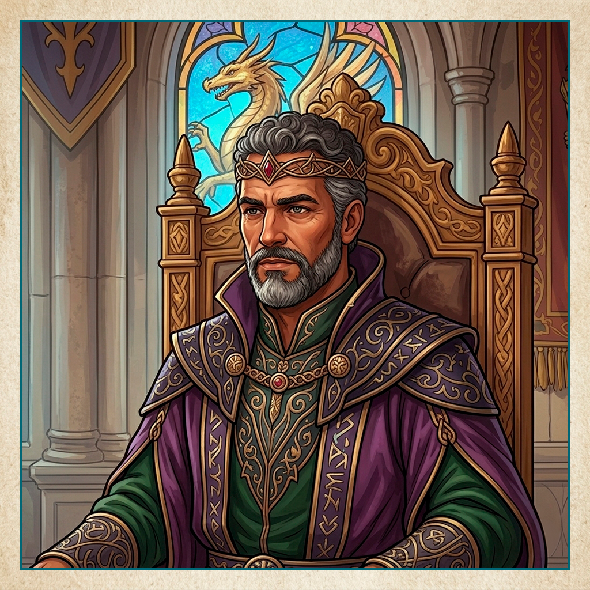
Vede FlechaleveAtual Rei de Phantasia, Vede Flechaleve é um humano cuja presença combina autoridade natural com uma mente afiada e inquieta. Herdeiro de uma linhagem marcada por liderança e desafios constantes, Vede não se destacou apenas por direito de sangue, mas por mérito próprio. Desde jovem demonstrou uma inteligência incomum, aliada a uma curiosidade insaciável, especialmente no que diz respeito às artes arcanas. Com o tempo, tornou-se não apenas um governante capaz, mas também um dos mais notáveis feiticeiros de todo o Reinado.
Nos bastidores, há rumores de que o rei se envolve diretamente em estudos e projetos que poucos compreendem completamente. Vede Flechaleve II não é apenas um rei que governa seu tempo, é alguém que parece se preparar para o que ainda está por vir.
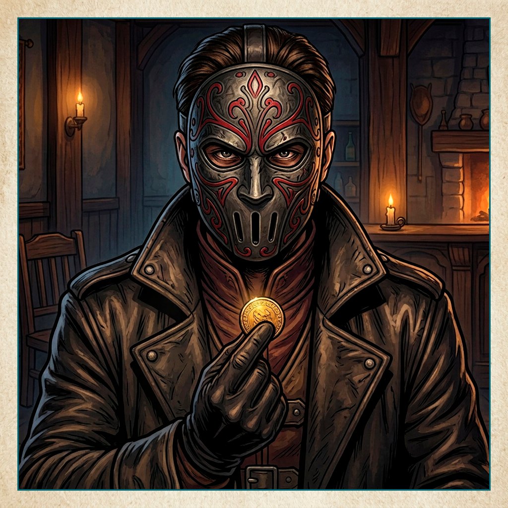
William "Raposa" LennoxWilliam é um órfão criado em orfanatos de fantasia. Começou a roubar cedo, antes da adolescência, e se tornou realmente bom nisso. Mas sua real vocação é social: ele circula com facilidade entre qualquer classe social. É carismático, encantador, charmoso, convincente e loquaz.
Com o dinheiro que juntou, estudou muito. Estratégia, psicologia, liderança, sociologia, antropologia... Tornou-se um especialista em manipulação. E, assim, foi natural que ele chegasse ao posto de Raposa, uma das mais altas e lucrativas Chaves do Círculo Vermelho.
Pouquíssimas pessoas conhecem seu rosto ou nome. Ele quase nunca está em público sem sua máscara negra.
Quem quer o melhor intermediário e pode pagar por ele procura o Raposa.
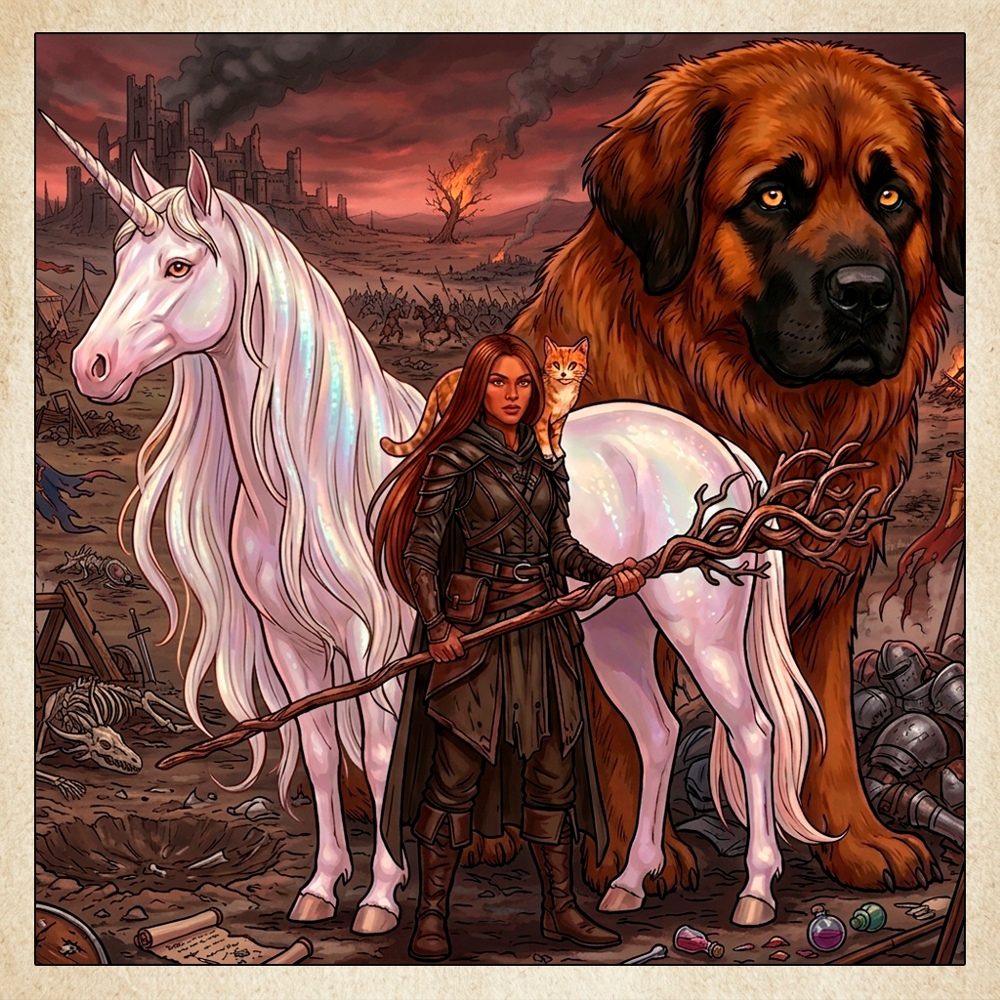
Yasmin Fäye FlechalevePrincesa de Phantasia, Yasmin Fäye Flechaleve carrega em si o peso e o potencial de uma linhagem extraordinária. Filha do rei Vede Flechaleve e da rainha Jak’Ln Fäye, e descendente direta de Marco I, ela representa a união entre diferentes tradições do Reinado: a liderança humana, a sutileza élfica e a herança histórica que moldou Phantasia.
Ainda jovem, Yasmin já se destacou como uma poderosa druida, profundamente conectada à natureza e às forças primordiais do mundo. Sua magia é viva, instintiva e, muitas vezes, imprevisível — mais próxima do fluxo natural da vida do que das estruturas rígidas da magia arcana.
Yasmin é frequentemente vista longe dos salões reais, explorando florestas, campos e regiões selvagens do reino. Ao seu lado estão seus companheiros inseparáveis: Fun, uma cadela gigante de lealdade inabalável; Tigra, uma gata mágica de comportamento enigmático e inteligência aguçada; e Gwen, um raro e majestoso unicórnio, cuja presença por si só já é considerada um presságio de algo maior. Juntos, formam um vínculo que vai além da simples companhia, refletindo a profunda conexão da princesa com todas as formas de vida.